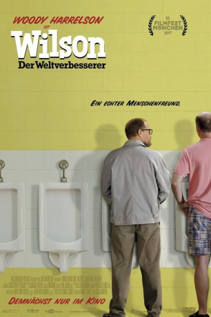
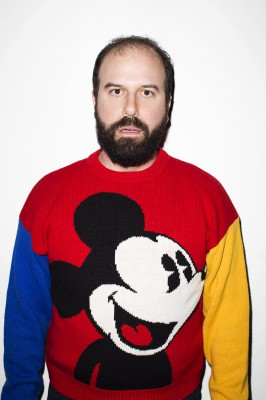
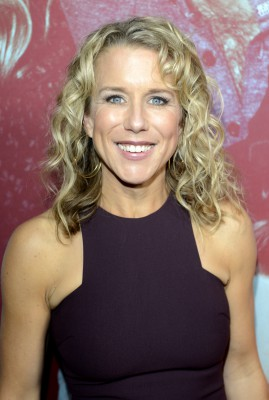
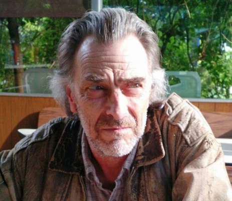

#6579 Wilson - Der Weltverbesserer
Alternativ: Wilson
 
 IMDB-Wertung: 5.8 / 10
IMDB-Wertung: 5.8 / 10  Metascore: 49
Metascore: 49 
Wilson ist ein eigenwilliger Einzelgänger, der außer zu seinem Hund zu kaum einem anderen Lebewesen eine Verbindung aufzubauen scheinen kann. Nach dem Tod seines Vaters beschließt der ebenso einsame wie neurotische und irritierend ehrliche Misanthrop, seine Ex-Frau Pippi zu finden, in der Hoffnung, mit ihr einen Neuanfang zu starten, obwohl die beiden eigentlich seit Jahren hoffnungslos zerstritten sind. Doch als Wilson sie findet, muss er zu seiner Überraschung bald feststellen, dass er Vater einer Tochter im Teenager-Alter ist: Claire wurde nach der Geburt zur Adoption freigegeben und deswegen hat Wilson sie nie kennengelernt. Mit allen Mitteln versucht er nun, alle drei als Familie zu einen, um endlich das Idyll zu finden, nach dem er sich schon so lange sehnt...
Jahr: 2017
Dauer: 94 Minuten
FSK: 12
Land: USA Studio: Fox Searchlight PicturesTonspuren: DD2.0 - ,
Untertitel: Deutsch,
Auflösung: 1080p (1920x1040) Größe: 7966 MB
Genre: Drama, Komödie
Regisseur: Craig Johnson
Drehbuch: Daniel Clowes
Soundtrack:
Darsteller:
 Woody Harrelson als Wilson
Woody Harrelson als Wilson- Sandy Oian-Thomas als Dog Lover
- Shaun Brown als Laptop Man
- James Robert Miller als Bearded Man
-  Brett Gelman als Robert
 Mary Lynn Rajskub als Jodie
Mary Lynn Rajskub als Jodie Judy Greer als Shelly
Judy Greer als Shelly- Toussaint Morrison als Diego
- Andrew Hawtrey als Commuter
- Shawn J. Hamilton als Attendant
 Tonita Castro als Nanny
Tonita Castro als Nanny David Warshofsky als Olsen
David Warshofsky als Olsen-  Lauren Weedman als Cat Lady
 Margo Martindale als Alta
Margo Martindale als Alta- Roxy Wood als Sinammon
-  Bruce Bohne als Karl
- Rachel Weber als Waitress
 Laura Dern als Pippi
Laura Dern als Pippi James Saito als Warren Kudo
James Saito als Warren Kudo- Mark Benninghoffen als Annoying Customer's Husband
- Miles Strommen als Aidan
- Jackson Bond als Rocky
- Katie Rose Law als Monika
 Isabella Amara als Claire
Isabella Amara als Claire- Chris Carlson als Men's Room Man
 Cheryl Hines als Polly
Cheryl Hines als Polly- Bill McCallum als Will
- Alec George als Cooper
 Nate Mooney als Allan Coffey
Nate Mooney als Allan Coffey Tom Proctor als Silverwolf
Tom Proctor als Silverwolf- Paul Cram als Piper
- Matt Roy als Aryan
- Adam Farabee als College Kid
- Peter Moore als Mr. Cassiday
- Geoff Briley als Prison Guard , uncredited
- Jeff Bukowski als Dog Food Carrier , uncredited
- Squall Charlson als Cafe Patron , uncredited
- John Edel als Lounge Customer , uncredited
- Bobby E. Erickson als Theater Goer #1 , uncredited
- Kirsten Gregerson als Soccer Mom / Dinosaur , uncredited
- Emily JoAnn Holasek als Train Passenger , uncredited
- Sally-Anne Hunt als Girl at Amusement Park , uncredited
- Ava Justin als Girl at Amusement Park , uncredited
- Christopher Kroon als Train Passenger , uncredited
- Chelsea Anne Lawrence als Streetwalker , uncredited
- John Murray als Passer-by , uncredited
- Alexandra Nedved als Cafe Customer , uncredited
- Corban Noah als Mall Goer , uncredited
- Jack Norton als Mall Goer , uncredited
- Emeline O'Hara als Jogger , uncredited
Datei: X:\2017(N-Z)\Wilson - Der Weltverbesserer (2017, FSK12, 1920x1040).mkv seit 14.07.2017
Festplatte: HD 2017(A-Z)-2018(A-F)
 Es gibt insgesamt 170 Filme in der Gruppe '2017(N-Z)'
Es gibt insgesamt 170 Filme in der Gruppe '2017(N-Z)'